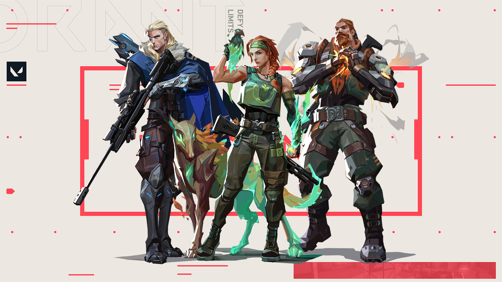
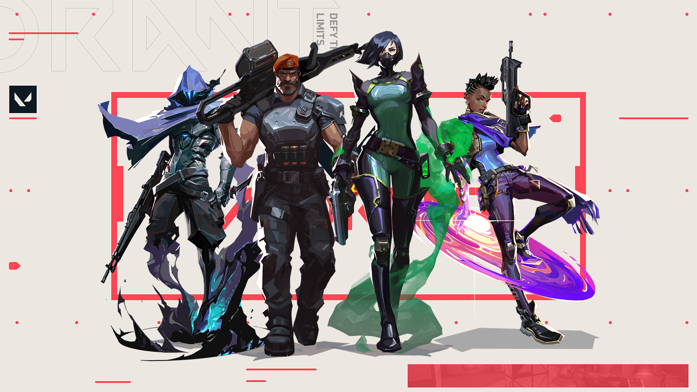
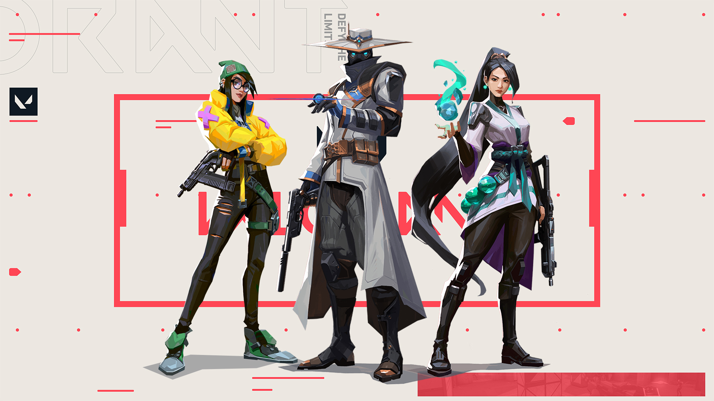

Valorant consiste em uma arena 5×5 na qual as equipes se revezam para armar a Spike, uma espécie de bomba.
Além de tudo que um bom FPS pede, boa mira, posicionamento estratégico, o game tem agentes com habilidades
únicas,
que dão a possibilidade do gameplay ser mais estratégico que os demais jogos do gênero.
Cada jogador tem apenas uma vida por round. Se foi abatido, precisa esperar a próxima rodada para ajudar a
equipe.
Vence o time que somar 13 rounds primeiro,assim são definidos os embates de Valorant. As funções de cada
agente,
bem utilizadas, vão buscar a força necessária para a equipe sair vencedora desse confronto.
Classes e Personagens
Duelistas
Tem foco para dano e ataque, é o estilo predileto dos jogadores assassinos.

Agentes: Jett, Raze, Phoenix, Reyna, Neon e Yoru
Iniciadores
Agentes com poder de começar uma boa briga, com habilidades e resistência para ser o chamariz do combate.

Agentes: Breach, Sova, Skye e Fade
Controladores
Tem boas skills para manter postos de controle, podemos considerar como os mais defensivos do jogo, porém
muito importantes no meta game.

Agentes: Omen, Brimstone, Viper, Astra, Harbor
Sentinelas
Peças fundamentais na estratégia, tem suas habilidades focadas em dar suporte aos colegas de time.

Agentes: Sage, Cypher, Kiljoy e Chamber